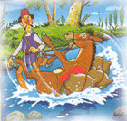
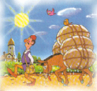

Keledai Pembawa Garam
Pada suatu hari di musim panas, tampak seekor keledai berjalan di pegunungan. Keledai itu membawa beberapa karung berisi garam dipunggungnya. Karung itu sangat berat, sementara matahari bersinar dengan teriknya. "Aduh panas sekali. Sepertinya aku sudah tidak kuat berjalan lagi," kata keledai. Di depan sana, tampak sebuah sungai. "Ah, ada sungai! Lebih baik aku berhenti sebentar," kata keledai dengan gembira. Tanpa berpikir panjang, ia masuk ke dalam sungai dan….
Byuur… Keledai itu terpeleset dan tercebur. Ia berusaha untuk berdiri kembali, tetapi tidak berhasil. Lama sekali keledai berusaha untuk berdiri. Anehnya, semakin lama berada di dalam air, ia merasakan beban dipunggungnya semakin ringan. Akhirnya keledai itu bisa berdiri lagi. "Ya ampun, garamnya habis!" kata tuannya dengan marah. "Oh, maaf… garamnya larut di dalam air ya?" kata keledai.

Beberapa hari kemudian, keledai mendapat tugas lagi untuk membawa garam. Seperti biasa, ia harus berjalan melewati pegunungan bersama tuannya. "Tak lama lagi akan ada sungai di depan sana," kata keledai dalam hati. Ketika berjalan menyeberangi sungai, keledai menjatuhkan dirinya dengan sengaja. Byuuur…. Tentu saja garam yang ada dipunggungnya menjadi larut di dalam air. Bebannya menjadi ringan. "Asyik! Jadi ringan!" kata keledai ringan. Namun, mengetahui keledai melakukan hal itu dengan sengaja, tuannya menjadi marah. "Dasar keledai malas!" kata tuannya dengan geram.
>
Pedagang yang merasa marah, kemudian membawa keledainya tersebut kembali ke pasar, dimana keledai tersebut di muati dengan keranjang-keranjang yang sangat besar dan berisikan spons. Ketika mereka kembali tiba di tengah sungai, sang keledai kembali dengan sengaja menjatuhkan diri, tetapi pada saat pedagang tersebut membawanya ke pinggir sungai, sang keledai menjadi sangat tidak nyaman karena harus dengan terpaksa menyeret dirinya pulang kerumah dengan beban yang sepuluh kali lipat lebih berat dari sebelumnya akibat spons yang dimuatnya menyerap air sungai.
Pesan Moral "Berpikirlah dahulu sebelum bertindak. Karena tindakan yang salah akan menyebabkan kerugian bagi kita."
Sumber dongeng : http://www.balita-anda.com/dongeng-anak/749-keledai-pembawa-garam-.html